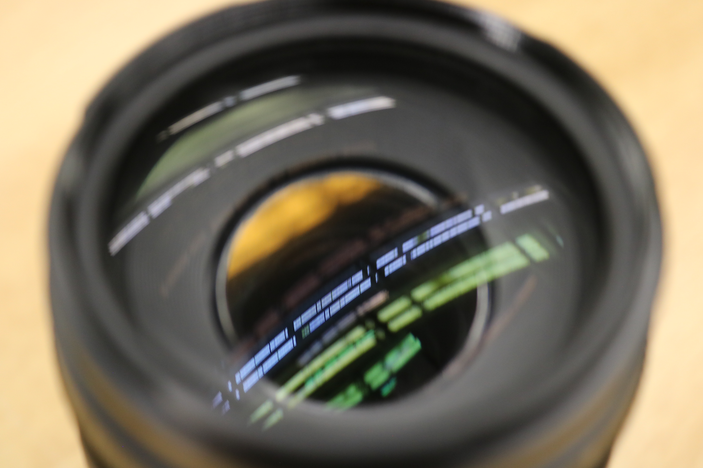
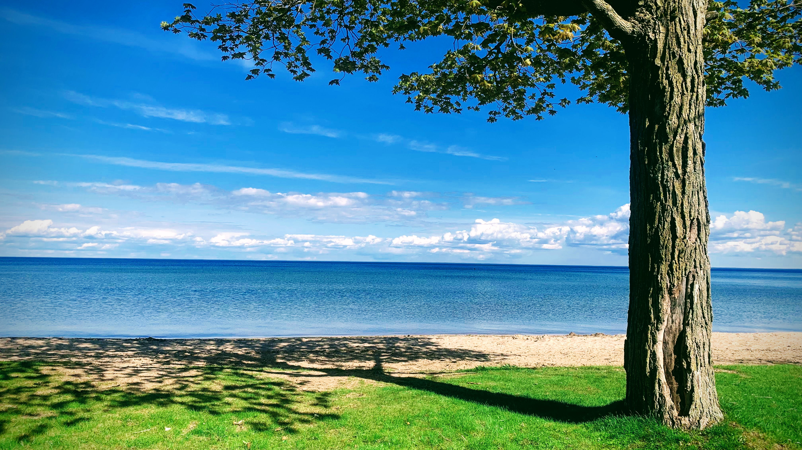
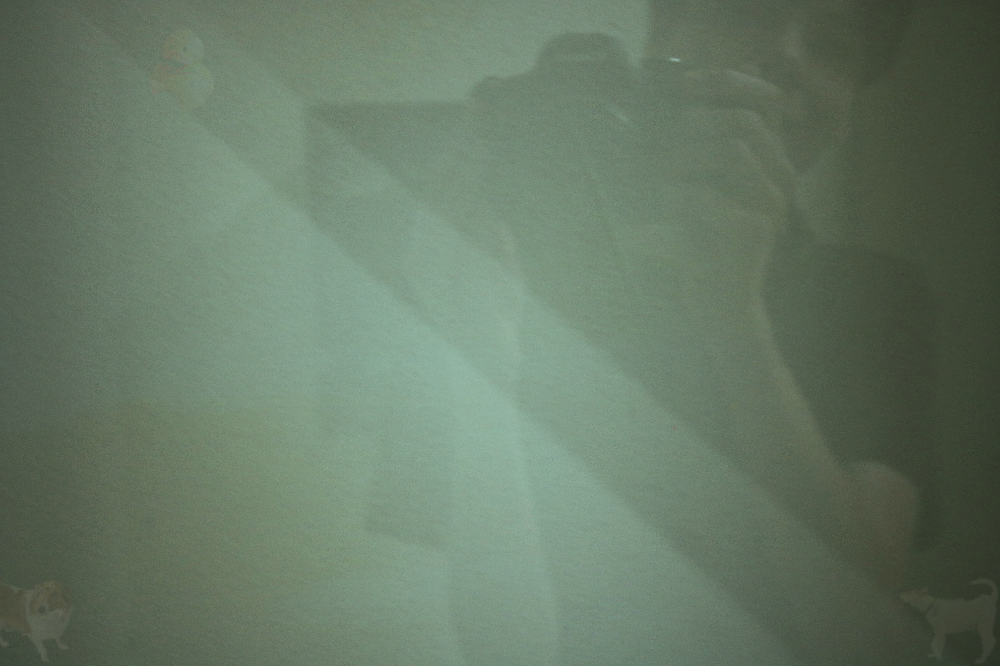
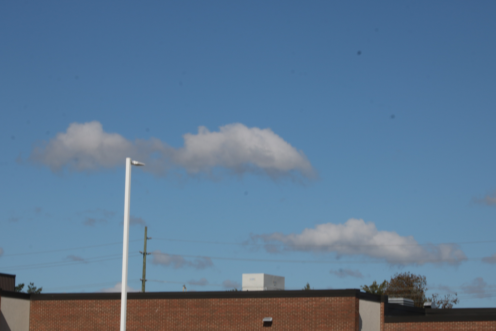
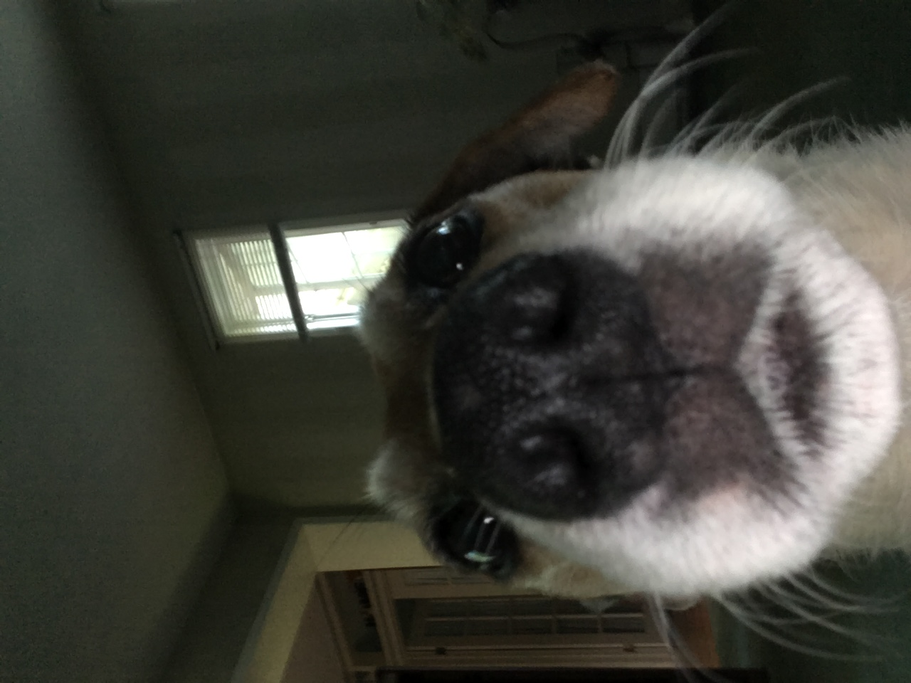
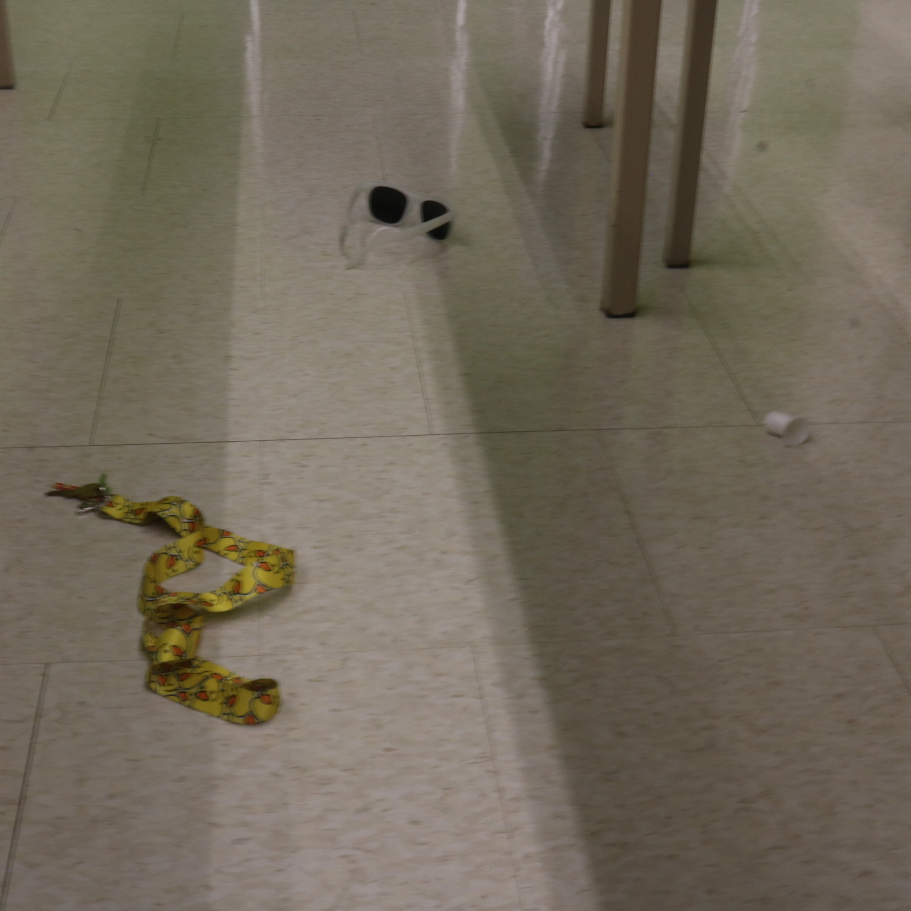
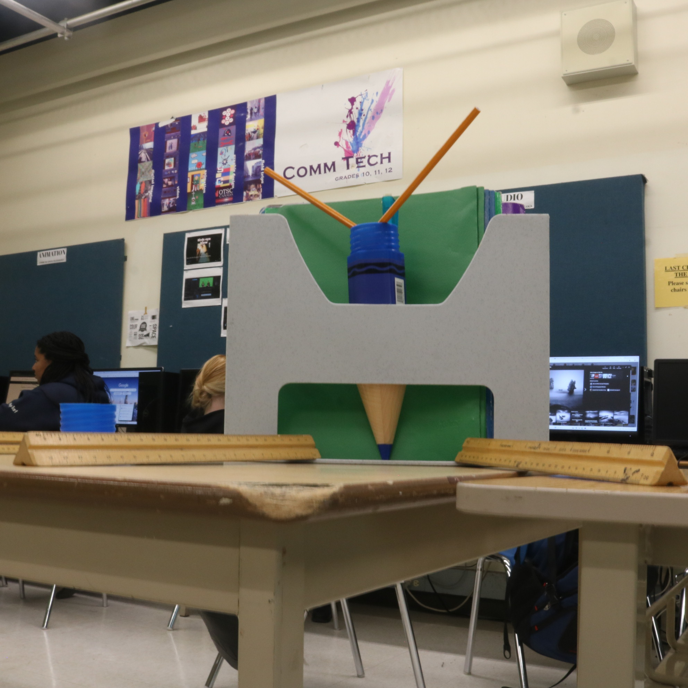

Explore my curated collection of photographs capturing moments, pets, landscapes, and creative perspectives.
View Gallery
Scenes and moments from the outdoors.

Unique perspectives and visual storytelling.



